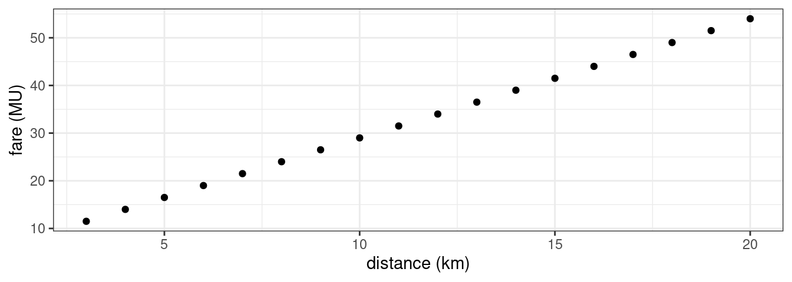
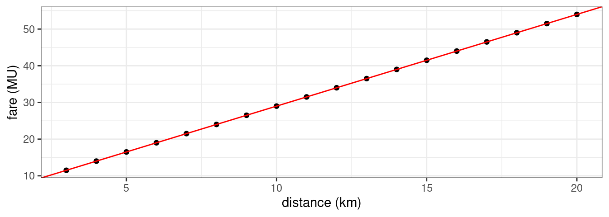
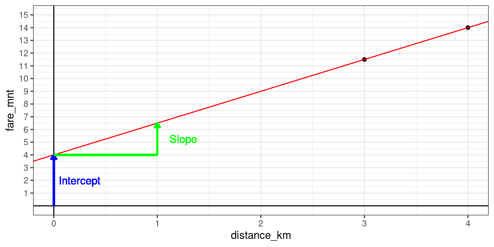
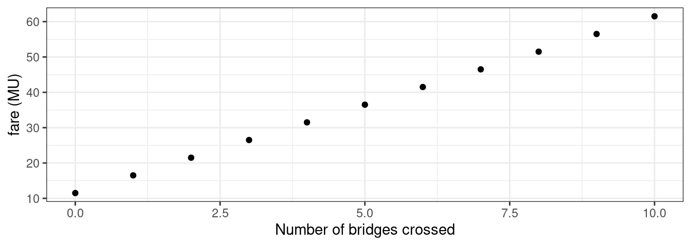
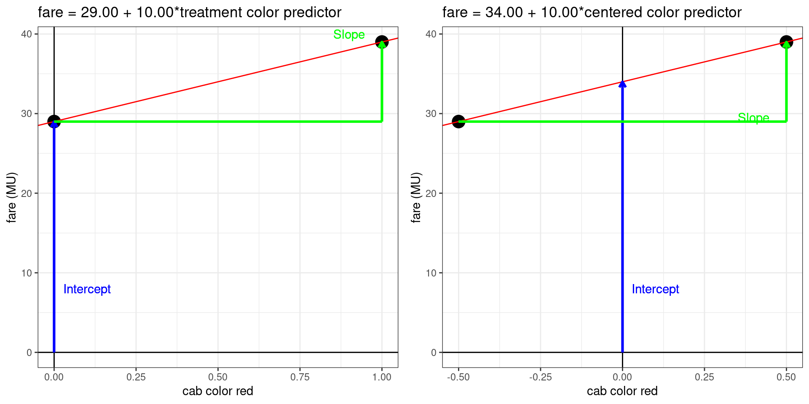
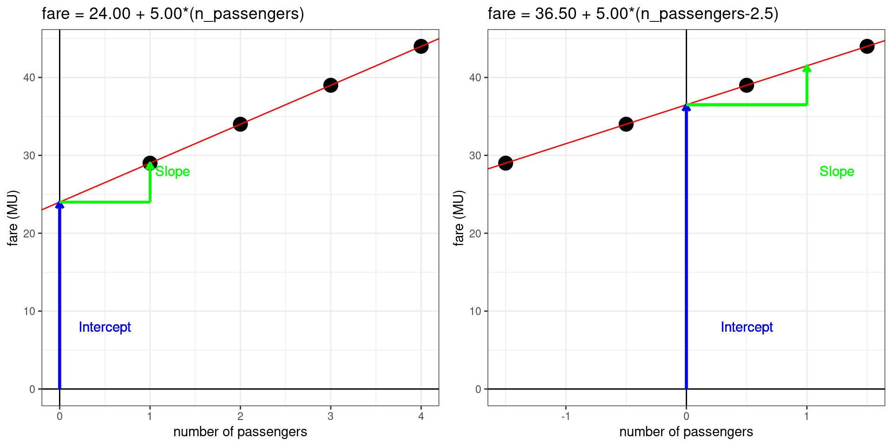
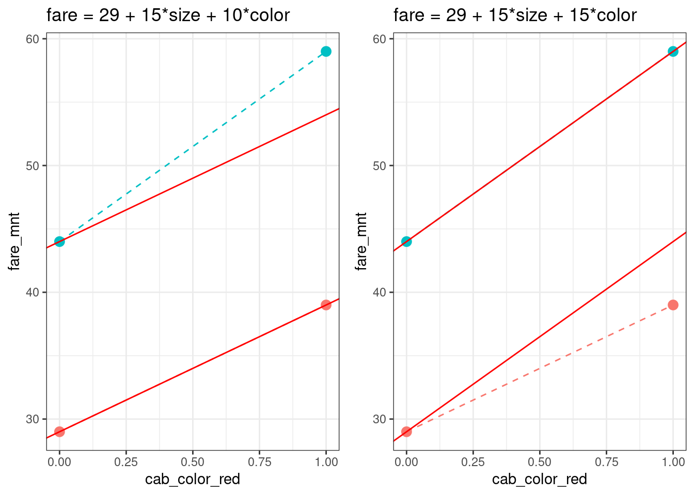
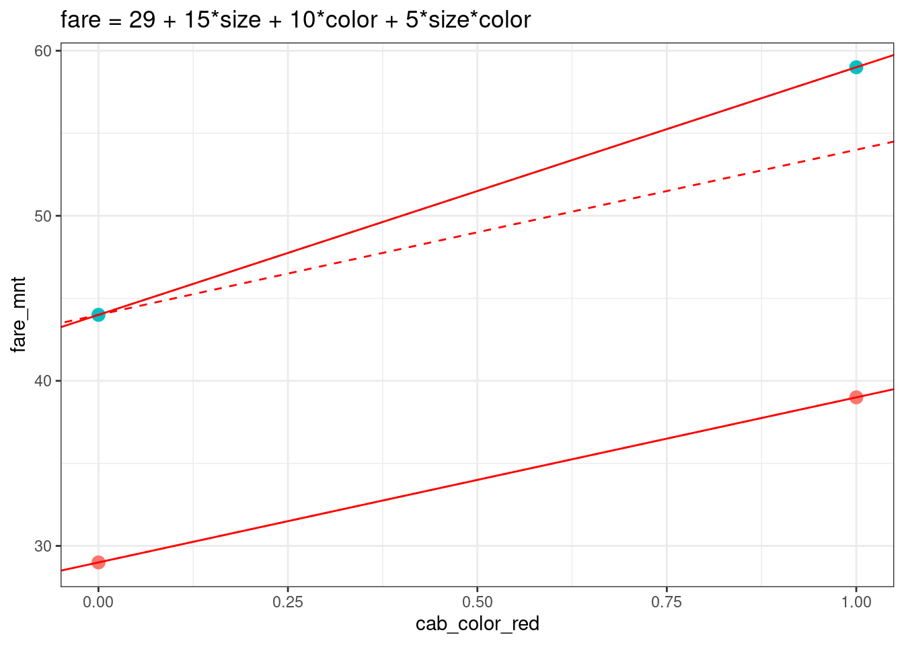
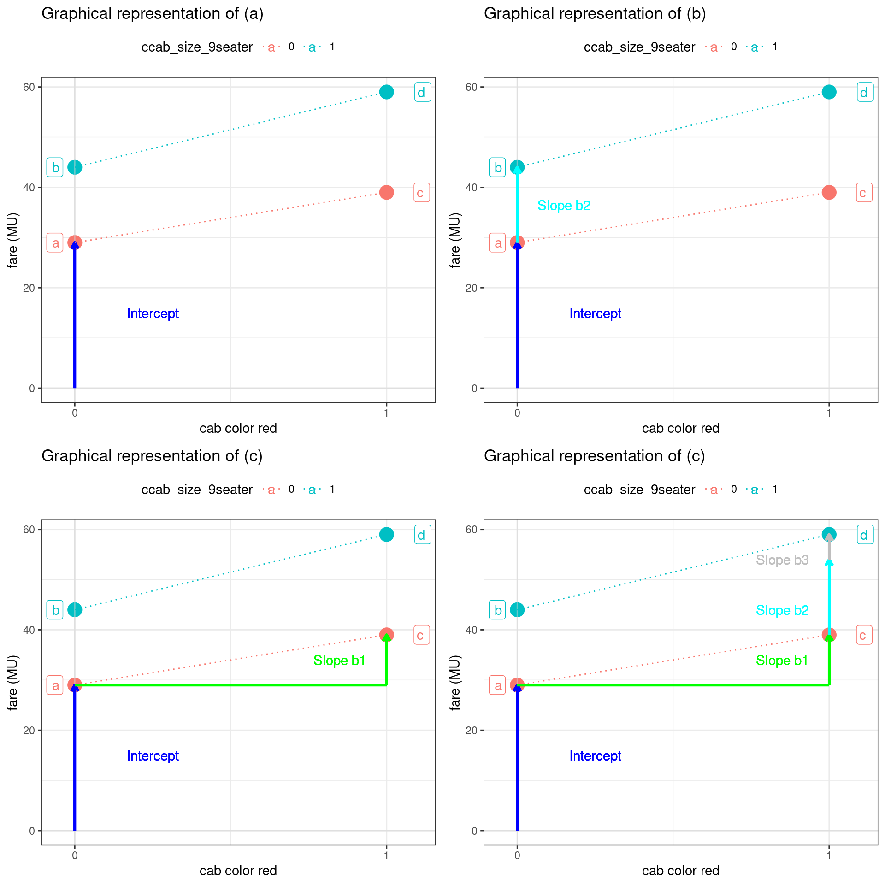
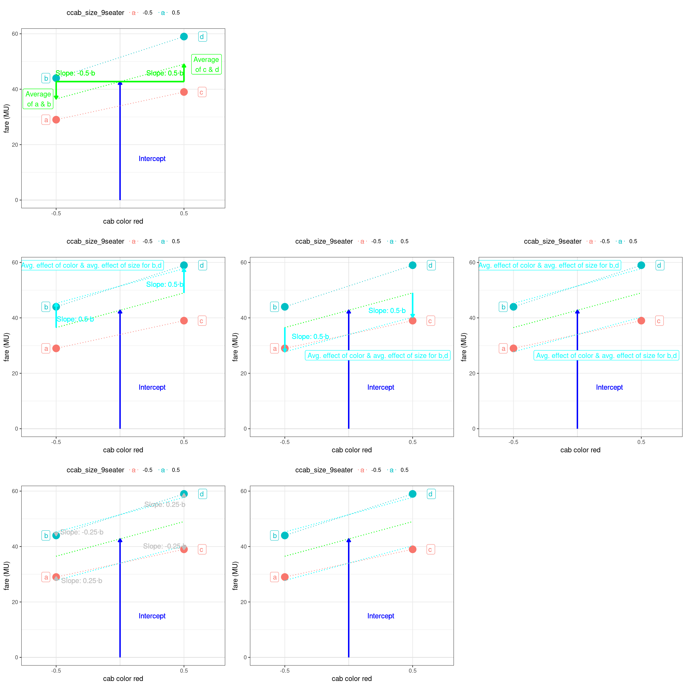

Chapter 4 Error-less Linear Models
What I am going to call ‘error-less linear models’ are actually systems of linear equations like those you might recall from school (of the ‘2=a+3x; 1=a+x; solve for a and x’-variety). I’ll call them error-less linear models, because in many important ways they resemble the class of statistical models we will use in this course: (Generalized) Linear Models.
In this section we are going to explore error-less linear models, i.e. linear models that work on idealized data, when there is no measurement error, and when the ‘correct’ model describing the data is known.
The basic form of a linear regression model, in a form that works for idealized data (i.e., data perfectly follow some hypothesized function):
\[ \underbrace{Y}_{\text{dependent variable}} = \overbrace{\underbrace{a}_{\text{intercept}}}^{\text{additive term}} + \overbrace{\underbrace{b_1}_{\text{slope}} * \underbrace{X_{1}}_{\text{predictor}}}^{\text{additive term}} + \overbrace{\underbrace{b_2}_{\text{slope}} * \underbrace{X_{2} }_{\text{predictor}}}^{\text{additive term}} + \ldots\]
- The typical dataset we will be working with has a structure similar to the one below:
| dependent variable (\(Y\)) |
predictor 1 (\(X_1\)) |
predictor 2 (\(X_2\)) |
(further predictors) |
|---|---|---|---|
| 2.95 | 1.1 | 2.2 | (…) |
| 9.1 | 2.9 | -4.0 | (…) |
| 5 | 3.1 | -1.4 | (…) |
| … | … | … | (…) |
- What the variables represent will depend on the problem you’re studying and the question you’re asking
- dependent variable (e.g., hours of sleep/day)
- predictor 1 (e.g., daily food intake in kg)
- predictor 2 (e.g., deviation from average weight)
- The dependent variable \(y\) is assumed to depend on the predictors \(x_1, x_2, \ldots\).
- The predictors \(x_1, x_2, \ldots\) can be independent variables (i.e., under experimental control), or other types of covariates (i.e., simply observed).
The model is called linear because \(y\) is assumed to be a linear function of the \(x_1, x_2, \ldots\). That \(y\) increases by some fixed amount \(\Delta y\) for every increase of \(\Delta x_i\) in \(x_i\).
Two types are usually distinguished: single-variable, and multi-variable (also: simple linear regression, multiple linear regression).
The above equation is about vectors of observations. Let’s see how it translates to statements about specific observations. Please note that \(Y\), \(X_1\), \(X_2\) in the equation above are all vectors, while \(y_i\), \(x_{1,i}\), \(x_{2,i}\) are all specific numbers (from the \(i\)-th row).
\[ \underbrace{y_i}_{\text{dependent variable}} = \overbrace{\underbrace{a}_{\text{intercept}}}^{\text{additive term}} + \overbrace{\underbrace{b_1}_{\text{slope}} * \underbrace{x_{1,i}}_{\text{predictor}}}^{\text{additive term}} + \overbrace{\underbrace{b_2}_{\text{slope}} * \underbrace{x_{2,i} }_{\text{predictor}}}^{\text{additive term}} + \ldots\]
For two predictors \(X_1\) and \(X_2\), and three observerations like in the table above, this equation translates to the following equation system \[ y_1 = a + b_1\cdot x_{1,1} + b_2\cdot x_{2,1} \\ y_2 = a + b_1\cdot x_{1,2} + b_2\cdot x_{2,3} \\ y_3 = a + b_1\cdot x_{1,3} + b_2\cdot x_{2,3}\]
That is, \[ 2.95 = a + b_1\cdot 1.1 + b_2\cdot 2.2 \\ 9.1 = a + b_1\cdot 2.9 + b_2\cdot (-4) \\ 5 = a + b_1\cdot 3.1 + b_2\cdot (-1.4)\]
In this case, there is a perfect solution: \(a \approx 7.90\), \(b_1 \approx -1.60\), \(b_2 \approx -1.45\) (rounded to two decimal places). \[ \underbrace{y}_{\text{dependent variable}} = \overbrace{\underbrace{7.9}_{\text{intercept}}}^{\text{additive term}} + \overbrace{\underbrace{(-1.60)}_{\text{slope}} * \underbrace{x_1}_{\text{predictor}}}^{\text{additive term}} + \overbrace{\underbrace{(-1.45)}_{\text{slope}} * \underbrace{x_2}_{\text{predictor}}}^{\text{additive term}} + \ldots\]
| model prediction | dependent variable | predictor 1 | predictor 2 | (further predictors) |
|---|---|---|---|---|
| \(7.9-1.6\cdot 1.1-1.45\cdot 2.2\) | 2.95 | 1.1 | 2.2 | (…) |
| \(7.9-1.6\cdot 2.9-1.45\cdot (-4)\) | 9.1 | 2.9 | -4.0 | (…) |
| \(7.9-1.6\cdot 3.1-1.45\cdot (-1.4)\) | 5 | 3.1 | -1.4 | (…) |
| … | … | … | (…) |
- Throughout this course, we will make use of the (Generalized) Linear Model as the main statistical model because it is:
- fairly easy to use (implemented in most programming languages)
- sufficiently versatile for most practical purposes (can handle most problems you would want to solve at this point)
- well-studied (all mistakes you will make have already been made, and written about)
4.1 Single-variable models
- Let’s take a look at a dataset of taxi rides in a country far far away. Imagine that I don’t speak the local language, but I need to go places, and in the process, I would like to understand how the cab fare system works.
- I have taken 18 taxi rides, and recorded the travel distance, as well as the taxi fare for reach ride.
- The following plot shows each of these measurements as a point with the distances (in km) on the x-axis, and the fare (money units, MU) on the y-axis.
- This dataset is interesting, because you probably understand the typical relationships between ride distance and fare fairly well – it is linear. So it is an ideal example for illustrating linear models.

- Unsurprisingly, we can see clearly that the fare increases with distance. In other words, distance and fare have a positive relationship (if one increases, so does the other).
The relationship between the two variables is so strong that if we know the value of one of the two variables for a particular data point, we can predict the value of the other with a high degree of confidence. (You might want to say that I can predict if with absolute certainty, but that presupposes precise knowledge of the cab fare system in that city, and an extreme degree of trust towards the local taxi drivers. Let’s assume that we don’t have either.)
We can make that prediction with such a high degree of certainty because all the points seem to lie on a line. If we learned the function that describes this line, we could learn much more from this dataset than the simple fact that the two variables a positive related.
That is unsurprising to begin with, but we may want to know how exactly they are related. A simple way to capture this relationship is to try and describe it with this function:
\[ \text{fare} = a + b \cdot \text{distance} \]
- What this equation says is that if we take a value for distance, multiply it by some number called \(b\), and then add another number called \(a\), we will know the fare that corresponds to this distance. (In other words, this equation posits that the relationship between distance and fare is linear.4)
- In this particular case the relationship is \(\text{fare} = 4 + 2.5 \cdot \text{distance}\), which means that \(a=4\), and \(b=2.5\). We can verify that this equation is indeed the correct generalization by visualizing this function as a line in the plot below: As you can see, it accurately describes all the points in the graph.

- Importantly, if we conceptualize \(a\) and \(b\) as just some numbers that we need to add and multiply by, we will miss an important insight: Both numbers have useful interpretations. In this case, \(a\) and \(b\) can be interpreted as follows:
- \(a\) is called the intercept: It can be interpreted as the value of fare when distance is 0. In this case, the intercept is \(4~MU\), which is the amount you have to pay if you get in and change your mind after the taxometer has been switched on (if the taxi driver is a real stickler for rules).
- \(b\) is called the slope for distance: It can be interpreted as the additional amount of money you have to pay for every additional kilometer traveled. A slope of \(2.5\) means that a distance increase of \(1~km\) increases the fare by \(2.5~MU\).
- The plot below illustrates these interpretations:

4.2 Multi-variable models
Let’s imagine that this imaginary city also has many bridges. Since I wasn’t sure whether bridge tolls apply, I also recorded the number of bridges crossed on each trip. In the previous section, we’ve looked at the subset of data where no bridges were crossed. Let’s see how the fare depends not only on distance travelled, but also on the number of bridges crossed.
Now, we are looking at the relationship between three variables, and the data frame looks as follows:
- Let’s see if there even is a relationship. Let’s look at the effect of bridges at distance=\(3\,km\).

Yup, it looks like there is a positive effect. Let’s model it in additive fashion:
- We will again assume that the relationships between fare and distance, as well as between fare and number of bridges crossed is linear, and that they contribute to the fare independently. We can now describe the relationship with the following equation: \[ fare = a + b_1 \cdot distance + b_2 \cdot N_{bridges} \]
- The correct parameter values for this equation are \(a=4\), \(b_1 = 2.5\) (as previously), and \(b_2=5\). The interpretation of the coefficients is similar to the previous section:
- \(a\) (the intercept) is the fare when no bridges have been crossed, and the travel distance is zero.5
- \(b_1\) (the slope for distance) is the additional fare for every additional kilometer.
- \(b_2\) (the slope for \(N_{bridges}\)) is the additional fare for every additional bridge.
The following plot shows the data vis-à-vis the linear model fits. You can turn the plot in the browser. Drag it around using your mouse.
Because we are dealing with a relationship between three variables, every datapoint is a point in three-dimensional space (x-axis: distance, y-axis: number of bridges, z-axis: fare). The multi-variable model fit is illustrated by the blue plane perfectly fitting through all points, which rises with increasing distance and/or number of bridges crossed.
The green plane below shows the single-variable model from the last section (\(fare = 4 + 2.5\cdot distance\)) for comparison. The plane corresponding to the single-variable model does not rise with the number of bridges crossed. This is because it is not used as a predictor in that model.
You will also notice that the red plane and the black plane intersect in a line at \(N_{bridges} = 0\). This is because the two model equations \(a + b_1 * distance\) and \(a + b_1 * distance + b_2 * N_{bridges}\) are equivalent for \(N_{bridges} = 0\).
4.3 Models with categorical predictors
- Predictors on the nominal or ordinal scale (as opposed to ratio, or interval scale) are not naturally represented by numbers. For example:
- Speaker gender
- Presence or absence of wh-movement
- word order (e.g., SOV, SVO, VSO)
- size (long, short)
We can represent them numerically, but there are many coding options. We can represent a factor with two levels by (i) 0 and 1, or (ii) by -1 and 1, or (iii) by +0.5 and -0.5, or even (iv) 23 and 42.
In the case of the taxi fares, one such predictor is the color of the taxi: I’ve observed red and yellow taxis, and I didn’t know if there is possibly a difference in their pricing. In order to determine whether there is, I decided to take a ride in both types. (All the data in the previous sections was for yellow cabs only.)
The following plot shows the relationship between fare and cab color (for \(distance=10~km\), and \(N_{bridges} = 0\)). The x-axis shows the contrast for cab color (the numerical representation of of the categorical variable ‘color’). The y-axis shows the cab fare.

- While the choice of the coding scheme is somewhat arbitrary, it will affect the interpretation of the coefficients (that is, the parameters of the linear model, i.e., the intercept and the slope). In other words, model parameterization (or: contrast specification) affects the meaning of the coefficients. We will use equation (4.1) to describe the relationship, where cCabColorRed is a numerical representation of the cab color.
\[\begin{equation} \text{fare} = a + b \cdot \text{cCabColorRed} \tag{4.1} \end{equation}\]
- We will consider two ways representing color: treatment contrasts, sum contrasts. For the interpretations of the coefficients, keep in mind that we are using a subset of the data with \(10\,km\) rides, when no bridges have been crossed.
| treatment contrasts | sum contrasts | |
|---|---|---|
| contrast coding | yellow = 0; red = 1 | yellow = -0.5; red = 0.5 |
| \(a\) (intercept) interpretation | The fare ride in a yellow taxi | The average of the fares for a ride in a yellow taxi and one in a red taxi.6 |
| \(b\) (slope) interpretation | The fare difference between a ride in a red taxi and a yellow taxi. | The fare difference between a ride in a red taxi and a yellow taxi. |

4.4 Centered predictors
Now let’s imagine that I don’t know if the number of passengers affects the fare. So far I’ve been riding alone. Now let’s look at a few rides with several other people (\(distance = 10~km\), \(N_{bridges} = 0\), yellow cabs only).
As previously, we will model the relationship with a linear equation:
\[ \text{fare} = a + b * \text{number of passengers} \]
However if we model it like this, our intercept is 24 as you see in the plot below, and not 29, as we would expect. We did travel 10 km, after all. - Why is the fare so low?
The reason is that the intercept is the value of the fare when all predictors are 0 - yes, even the number of passengers. Barring any extremely unusual situations, this is not actually possible, and therefore an intercept of this kind is really just a number we need to plug into the equation. In other words, we don’t learn anything from it.
In order to remedy the situation and obtain a more useful intercept, we can center the predictor - that is, subtract the average of the vector from the vector itself. In this case, since the average number of passengers is \(2.5\), we will use
\[\text{fare} = a + b * (\text{number of passengers}-2.5)\]
- This will leave us with the following interpretations of the coefficients:
- \(a\): the fare paid for the average number of passengers, in this case for 2.5 passengers (on a 10 km ride, crossing 0 bridges, in a yellow cab)
- \(b\): the additional fare for every additional passenger (on a 10 km ride, crossing 0 bridges, in a yellow cab)

As you see, centering the predictor in a single-variable model changes the meaning of the intercept. As you can verify in the above plot, centering makes the intercept correspond to the cab fare at the average number of passengers (instead of at zero passengers). This change in interpretation is because centering changes the interpretation of the zero point of the predictor. While zero corresponds to no passengers when the predictor for the number of passengers is uncentered, it corresponds to the average number of passengers when it is centerered. The data is “moved to the left”, so to say. Because the intercept corresponds to the value of the fare at zero, the intercept changes as a result of centering.
In sum, centering predictors in single-variable models can help obtain interpretable coefficients.
4.5 Main effects and interactions
Let’s take a look the effect of cab color and cab size. What I didn’t mention before is that cabs come in two different sizes: 5-seaters, and 9-seaters. I want to find out whether larger cabs cost more. We’ll be looking at a subset of data with \(distance = 10~km\), and \(N_{bridges}=0\), only day rides.
We will set up numerical contrasts for the predictors for cab color (yellow and red), and cab size (5-seaters and 9-seaters), and model the relationship with the following linear equation. This means that we are trying to estimate the (main) effects of cab color and size, and maybe something else.
As previously, I would like to model the relationship using two additive terms, one for color, one for size.
\[\begin{equation} \text{fare} = a + b_1 * \text{cCabColorRed} + b_2 * \text{cCabSize9Seater} \tag{4.2} \end{equation}\]- Let’s see if that’s possible. Here is a plot of the data along with connecting lines (not a model, just lines).
This is weird … the effect of size depends on cab color. (You can see that the lines aren’t parallel, which means that the distance between them changes as x changes.)

Here is the raw data. So, can we model the relationship using equation (4.2)?
## cab_color_red cab_size_9seater fare_mnt
## 1126 0 1 44
## 4113 0 0 29
## 5832 1 0 39
## 9756 1 1 59- Of course not, because we need to account for the fact that the effect of color depends on size. In other words, there is an interaction between color and size.
As you see, no additive model will describe the relationship correctly. 
- Luckily, it’s only one point that is usually off. So what we need, is to ‘bump up’ the value at \(size=1, color=1\).
We can do this by creating a new predictor from the old ones, and giving it its own slope:
## cab_color_red cab_size_9seater cab_color_red__by__cab_size_9seater fare_mnt
## 1 0 1 0 44
## 2 0 0 0 29
## 3 1 0 0 39
## 4 1 1 1 59The new model, which includes two ‘main effects’ and an ‘interaction’ between them becomes:
\[\begin{equation} \text{fare} = a + b_1 * \text{cCabColorRed} + \\ b_2 * \text{cCabSize9Seater} + \\ b_3 * \text{cCabColorRed} * \text{cCabSize9Seater} \tag{4.3} \end{equation}\]- In this model, 5 is added to the prediction when both size, and color equal 1.
Such interactions also work quite well for continuous predictors, but that’s for another time …

4.6 Centered predictors and their effect on main effect and interaction coefficients
- We will set up numerical contrasts for the predictors for cab color (yellow and red), and cab size (5-seaters and 9-seaters), and model the relationship with the following linear equation. This means that we are trying to estimate the main effects of cab color and size, as well as their interaction.
\[ \text{fare} = a + b_1 * \text{cCabColorRed} + b_2 * \text{cCabSize9Seater} + b_3 * \text{cCabColorRed} * \text{cCabSize9Seater} \]
- We can treat the predictors in one of two ways7: We can either encode them using treatment contrasts (\(0/1\)), or using sum contrasts (\(-.5/+.5\)). Let’s review in turn what happens when we use each of those contrast coding schemes.
4.6.1 Treatment Contrasts
- If we use treatment contrasts, the combinations of our predictors can be reduced to the four unique cases below.
- The first three columns indicate the encoding of the color contrast (yellow=0, red=1) and size contrast (5-seater=0, 9-seater=1), and the interaction predictor (the product of the previous two).
- The next column illustrates what happens when we plug these predictors into the equation above. In other words, it shows how we can construct the predicted fare from the coefficients of the linear model.
- Finally, the last column illustrates the simplified version of the predicted value of the fare, with all terms which equal zero removed.
- This table below illustrates that:
- The intercept \(a\) corresponds to the fare for yellow 5-seaters (it is the only non-zero term in row (1a)).
- The slope \(b_1\) corresponds to the effect of color for 5-seaters only (it is the difference between rows (1c) and (1a)).
- The slope \(b_2\) corresponds to the effect of size for yellow cabs only (it is the difference between rows (1b) and (1a)).
- The slope \(b_3\) corresponds to the additional effect of size for red cabs. Alternatively, it can be understood as the additional effect of color for 9-seaters.
(In understanding the above reasoning it may help not to focus on how \(a,b_1,b_2\) and \(b_3\) are obtained, but rather focus on how \(a,b_1,b_2\) and \(b_3\) would behave in the above equations if they corresponded to the meaning I assigned them.)
| color | size | color \(\cdot\) size | |||
|---|---|---|---|---|---|
| (1a) | \(0\) | \(0\) | \(0\) | \(fare = a + 0 \cdot b_1 + 0 \cdot b_2 + 0 \cdot b_3\) | \(= a\) |
| (1b) | \(0\) | \(1\) | \(0\) | \(fare = a + 0 \cdot b_1 + 1 \cdot b_2 + 0 \cdot b_3\) | \(= a + b_2\) |
| (1c) | \(1\) | \(0\) | \(0\) | \(fare = a + 1 \cdot b_1 + 0 \cdot b_2 + 0 \cdot b_3\) | \(= a + b_1\) |
| (1d) | \(1\) | \(1\) | \(1\) | \(fare = a + 1 \cdot b_1 + 1 \cdot b_2 + 1 \cdot b_3\) | \(= a + b_1 + b_2 + b_3\) |

4.6.2 Centered Contrasts (aka Sum Contrasts)
- One of the problems with the above coefficient interpretations is that in most cases they are not quite what we are looking for.
- In most cases, we’ll be interested in the average effect of cab color, the average effect of cab size, and the interaction between the two, and not in the effect of color for small cabs, the effect size for yellow cabs, and the interaction between the two.
- While we can compute one set of coefficients from the other, the former are far more informative.
- Why would you want to invest several hours into learning how to do this with a linear model? (Because it’ll save you a lot of headaches later on.)
In trying to understand how these contrasts work, please focus on what properties they have rather than on how I (or someone) came up with them.
- Using sum contrasts will give us more informative coefficients. The table below also illustrates that:
- The intercept \(a\) corresponds to the average fare in the data set (the average of the rows (2a-d) is \(a\)).
- The slope \(b_1\) corresponds to the average effect of size (the average of (2a,b) minus the average of (2c,d) is \(b_1\)).
- The slope \(b_2\) corresponds to the average effect of color (the average of (2a,c) minus the average of (2b,d) is \(b_2\)).
- The slope \(b_3\) corresponds to the additional effect of size for red cabs. Alternatively, it can be understood as the additional effect of color for 9-seaters.
| color | size | color \(\cdot\) size | ||
|---|---|---|---|---|
| (2a) | \(-.5\) | \(-.5\) | \(+.25\) | \(fare = a - .5 \cdot b_1 - .5 \cdot b_2 + .25 \cdot b_3\) |
| (2b) | \(-.5\) | \(+.5\) | \(-.25\) | \(fare = a - .5 \cdot b_1 + .5 \cdot b_2 - .25 \cdot b_3\) |
| (2c) | \(+.5\) | \(-.5\) | \(-.25\) | \(fare = a + .5 \cdot b_1 - .5 \cdot b_2 - .25 \cdot b_3\) |
| (2d) | \(+.5\) | \(+.5\) | \(+.25\) | \(fare = a + .5 \cdot b_1 + .5 \cdot b_2 + .25 \cdot b_3\) |

Please note that we don’t neeed to assume that the ‘true relationship’ between the two variables is actually linear. Most interesting relationships are not linear. However, we can still learn a lot about them from a linear model as you will see in the following, especially if we are willing to assume that they are approximately linear. ↩
While the number of bridges depends on distance, it is in principle possible to cross a bridge while keeping the travel distance below a kilometer, in which case it would count as zero.↩
Please note that it is the average of the two fares, and not the average fare. ↩
There are more ways to encode the predictors, but these are the most common ones.↩